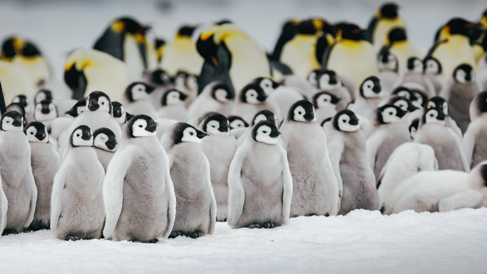

Penguins (order Sphenisciformes, family Spheniscidae) are a group of aquatic flightless birds. They live almost exclusively in the Southern Hemisphere, with only one species, the Galápagos penguin, found north of the equator.
Highly adapted for life in the water, penguins have countershaded dark and white plumage, and their wings have evolved into flippers.
Most penguins feed on krill, fish, squid and other forms of sea life which they catch while swimming underwater. They spend roughly half of their lives on land and the other half in the sea.
Climate
Although almost all penguin species are native to the Southern Hemisphere, they are not found only in cold climates, such as Antarctica. In fact, only a few species of penguin live so far south. Several species are found in the temperate zone, but one species, the Galápagos penguin, lives near the equator.
Size and weight
The largest living species is the emperor penguin (Aptenodytes forsteri):[1] on average, adults are about 1.1 m (3 ft 7 in) tall and weigh 35 kg (77 lb). The smallest penguin species is the little blue penguin (Eudyptula minor), also known as the fairy penguin, which stands around 40 cm (16 in) tall and weighs 1 kg (2.2 lb).
Penguins for the most part breed in large colonies, the exceptions being the yellow-eyed and Fiordland species; these colonies may range in size from as few as a 100 pairs for gentoo penguins, to several hundred thousand in the case of king, macaroni and chinstrap penguins.[65] Living in colonies results in a high level of social interaction between birds, which has led to a large repertoire of visual as well as vocal displays in all penguin species.[66] Agonistic displays are those intended to confront or drive off, or alternately appease and avoid conflict with, other individuals.[66]
The number of extant penguin species is debated.
The number of extant penguin species is debated. Depending on which authority is followed, penguin biodiversity varies between 17 and 20 living species, all in the subfamily Spheniscinae. Some sources consider the white-flippered penguin a separate Eudyptula species, while others treat it as a subspecies of the little penguin;[13][14] the actual situation seems to be more complicated.[15] Similarly, it is still unclear whether the royal penguin is merely a colour morph of the macaroni penguin. The status of the rockhopper penguins is also unclear.
